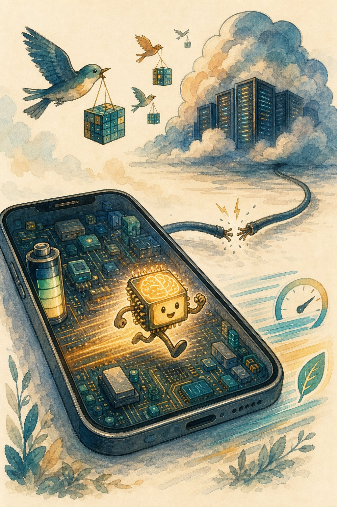

Small models & edge AI
Not every query needs a datacenter. Small language models on phones, laptops, and browsers now handle most everyday tasks — privately, offline, and nearly free. Learn the shrink toolkit and the cascade that routes smart.

Figure 50.1 — Intelligence is moving to the edge: private by architecture, fast by proximity, cheap by physics.
1. Why small wins most queries
| Edge advantage | What it buys |
|---|---|
| Privacy | Data never leaves the device — the strongest guarantee there is |
| Latency | No round-trip; 20–50 tok/s on modern phones/laptops |
| Cost | ~$0 marginal per query vs fractions of a cent in the cloud |
| Offline | Works on planes, in factories, in low-connectivity regions |
Reality check: a 3–8B well-trained SLM matches older 70B models on common tasks (summarise, classify, extract, draft). The frontier still wins hard reasoning — hence the cascade.
2. The shrink toolkit
- Quantization: FP16 → INT8 → INT4 (GPTQ/AWQ/GGUF). A 7B model drops from ~14 GB to ~4 GB with small quality loss. Always re-eval after quantising (Ch 46 golden set).
- Distillation: big teacher labels data / traces; small student trains on them (Ch 49 reasoning traces are premium fuel).
- Pruning + architecture: remove dead weights/heads; use efficient designs (grouped-query attention, sliding windows) for long context on weak chips.
- Runtimes: llama.cpp / Ollama (laptop), MLX (Apple silicon), ONNX / ExecuTorch (mobile), WebGPU + WASM (browser — no install).
# llama.cpp: serve a quantised 8B model on a laptop
llama-server -m qwen2.5-7b-instruct-q4_k_m.gguf --port 8080 -c 4096
curl localhost:8080/v1/chat/completions -d '{"messages":[{"role":"user","content":"Summarise this thread."}]}'3. The cascade: small first, big when needed
Edge gotchas
Quantisation silently breaking one capability (re-eval every slice) · models memorising on-device personal data (fine-tune carefully) · version sprawl across devices (pin + staged rollout) · assuming offline means unattackable (prompt injection works on-device too).
Short notes
SLMs (3–8B) handle most everyday tasks on-device: private, fast, ~free, offline. Shrink via quantisation (GGUF/INT4), distillation, efficient archs; serve with llama.cpp/Ollama/MLX/WebGPU. Cascade: on-device → cloud → reasoner by confidence; re-eval every slice after quantising.
Point notes
- Edge = private, fast, free, offline.
- INT4 GGUF: 7B in ~4 GB.
- Distil teacher traces into students.
- Cascade by confidence.
- Re-eval after every shrink.
MCQs
5 questions1. Strongest privacy argument for on-device inference:
2. INT4 quantization of a 7B model roughly:
3. A cascade (SLM → cloud → reasoner) primarily buys:
4. Distillation uses a big teacher to:
5. After quantising, the mandatory step is:
Practice questions
P1. Design on-device meeting summarisation for a phone (privacy-first).
On-device ASR → 3–8B SLM (INT4, ~3 GB) summarises locally; audio + transcripts never upload. Cascade: low-confidence segments re-checked on-device with a second pass (no cloud — privacy promise). Eval: summary faithfulness slice + battery/latency budget. Update models via staged app rollout with pinned versions.
P2. Cloud LLM bill is $80k/month, mostly easy queries. Your cascade plan?
Distil top intents into an 8B SLM (teacher traces + golden evals); deploy on cheap GPU/CPU with vLLM; router escalates on low confidence + hard-intent list. Target 80% on SLM. Log escalations weekly to retrain router + grow SLM coverage. Prove parity on the golden set before shifting traffic; canary the cutover.
P3. Quantised model passes overall eval but fails Hindi code-mixed queries. Diagnose + fix.
Slice failure hidden by the aggregate — quantisation hurt under-represented token paths. Fix: add code-mixed slice to the golden set (blocking), try higher-precision quant for embeddings (mixed precision), or keep a slightly larger SLM for that slice via router. Lesson: slice evals are mandatory, not optional.